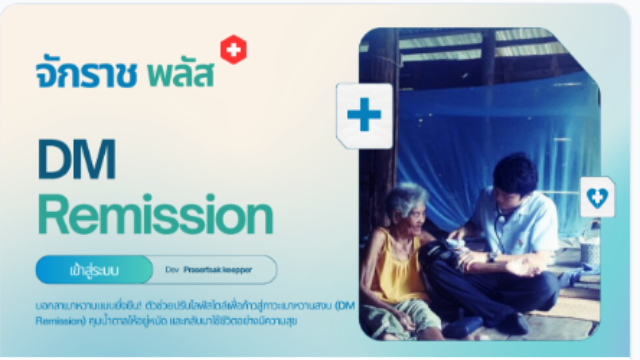

ค้นบ่อยสัปดาห์นี้
{{ s }}
{{ statAddons }} Add-on
{{ statUse }} {{ statUseLabel }}
97 เปิดใช้แล้วใน รพ. ของคุณ
ข้อมูล ณ 8 ก.ย. 2569 · ดึงจาก API ระบบจริง
เพิ่งเข้ามาครั้งแรก? เริ่มจาก 4 ขั้นนี้
ใช้เวลาประมาณ 1 นาที · ข้ามได้ทุกขั้น
{{ slide.kind }}
{{ slide.title }}
{{ slide.desc }}
{{ slide.meta1 }}
{{ slide.meta2 }}
คุณกำลังอยากแก้ปัญหาอะไร?
ทางเข้าที่คนหน้างานเข้าใจที่สุด — ไม่ใช่หมวดหมู่เทคนิค
แนะนำสำหรับคุณ
มาจากคน ไม่ใช่ตัวเลข · ทุกรายการต้องเขียนเหตุผลกำกับ
แนะนำเป็นพิเศษ
กลุ่ม 1 · 88 คะแนน
{{ pick.name }}
{{ pick.devName }}
ยืนยันแล้ว + มีสัญญา
· แจ้งปัญหาที่ BMS · ชั้นบริการ S2
เลือกเพราะ — {{ pick.reason }}
{{ t.label }}
5.0 (1)
คะแนนจากผู้ใช้ยืนยัน
41
รพ. ที่ใช้อยู่ใน 30 วัน
5 เครดิต
ต่อครั้งที่ใช้ (฿5)
รางวัลและการยกย่อง
{{ awardTitle }}

{{ awardRibbon }}
{{ awardWinnerName }}
{{ awardWinnerDev }}
{{ awardWinnerStat }}
ใช้อยู่ {{ awardWinnerHosp }} แห่ง
“{{ awardWinnerReason }}”
{{ awardSub }}
คัดจาก 123 รายการ โดยคณะกรรมการ 7 คน · {{ awardFreq }}
รางวัลพิเศษ — ผลิตภัณฑ์ของ BMS ไม่มีสิทธิ์รับ
{{ s.title }}
{{ s.winner }}
{{ s.note }}
กติกาความเป็นธรรม — ผลิตภัณฑ์ของ BMS แข่งได้เฉพาะรางวัลกลุ่มสาขา ไม่มีสิทธิ์รับรางวัลพิเศษ (ดาวรุ่ง · นวัตกรรมจากหน้างาน · ผู้พัฒนายอดเยี่ยม)
Add-on ยอดนิยม
คุณทำงานอะไร?
หนึ่ง Add-on ติดได้หลายป้าย ผลรวมจึงเกิน 123
อยากได้เครื่องมือแบบไหน?
แยกตามสิ่งที่ Add-on ทำได้ ไม่ใช่ใช้กับงานอะไร
ชุดคัดสรร
"รพ. ขนาดเท่าผม ควรเริ่มจากตัวไหน"
เผยแพร่ภายใน 90 วัน · ยังไม่มีคะแนนเต็มรูป แสดงป้าย "ใหม่" ไม่ใช่ดาว 0.0
พัฒนาโดยบุคลากรโรงพยาบาลเอง · ผู้พัฒนา 162 รายส่วนใหญ่คือคนหน้างาน
จาก Vendor ของเรา
บริษัทผู้พัฒนาภายนอกที่ผ่านการรับเข้าและมีสัญญากับ BMS · ชั้นนี้เปิดเมื่อมี vendor ครบ 3 รายขึ้นไป
แจ้งปัญหาที่ BMS ที่เดียวเสมอ ไม่ว่า Add-on จะเป็นของผู้พัฒนารายใด · เพดานพื้นที่แนะนำของ Vendor รวมกันไม่เกิน 40%
โปรโมชันและแคมเปญ
หมดอายุแล้วหายจากหน้าอัตโนมัติ
แคมเปญหลักของเดือน
{{ promoMain.title }}
{{ promoMain.desc }}
{{ c.v }}
{{ c.u }}
{{ promoMain.deadline }}
{{ p.tag }}
{{ p.title }}
{{ p.desc }}
{{ p.left }}
BMS Knowledge
{{ k.label }}
{{ a.kind }} · {{ a.length }}
{{ a.title }}
{{ a.meta }}
คุณเป็นผู้พัฒนา?
เผยแพร่ผลงานให้ 891 โรงพยาบาลที่ใช้ HOSxP เลือกใช้ได้
หา Add-on ที่ต้องการไม่เจอ?
ตั้งคำขอพัฒนา ให้ผู้พัฒนาเสนอเข้ามา — ขณะนี้มี 10 คำขอเปิดอยู่